Imagery processing
GIS595-004/603; MEA592-006/601:
UAS Mapping for 3D Modeling
Justyna Jeziorska
Objectives
- Understand the photogrammetric data processing as a multistep process;
- Indicate data needed for orthophoto/DTM generation from aerial imagery;
- Understand the difference between interior and exterior orientation of the photo;
- Describe the workflow of geoprocessing of aerial imagery in designated software (Agisoft Photoscan);
Photogrammetric process

Photogrammetric process
Data processing
UAS data
What do we get after the flight mission?

Digital imagery

- usually on the camera SD card
- can be geotagged (depends on camera)
- Camera lens location is "written into" each photo's EXIF file
- this is not necessary the case...
Flight log
- Onboard Inertial Measurement Unit (IMU) accurately measures the orientation of airborne sensors,
- Information is logged into a text file (flight log),
- Contains elements of exterior orientation (EO, more later in the lecture)

GCP coordinates
- Measured by GPS coordinates of the panels set before the flight
- Photo ID points (distinguishabe ground features)can be surveyed later on
- It is improtant to know the GCPs coorditate system (spatial reference system)
Spatial reference system
- defines, with the help of coordinates, how the two-dimensional, projected map in your GIS is related to real places on the earth
- It is crucial to know what is your data reference system!
- There are global map projections, but most map projections are created and optimized to project smaller areas of the earth’s surface
- There are two different types of coordinate reference systems: Geographic Coordinate Systems and Projected Coordinate Systems
- Spatial reference list (EPSG codes)
UAS data processing outputs
What do we get after processing the data?

Orthophoto
- aerial imagery geometrically corrected ("orthorectified") such that the scale is uniform
- raster: consistis of red, green and blue bands
Digital Surface Model

- DEM/DTM - Digital Elevation Model / Digital Terrain Model
- representation of a terrain's elevation
- bare-earth raster grid
- DSM - Digital Surface Model
- representation of a visible surface
- captures the natural and built features on the Earth’s surface
Pointcloud
- representation of the external surface of an object
- set of vertices in a three-dimensional coordinate system
- vector or raster?
- Dale Lutz once said, "point cloud is a badly behaved raster"
Multiple-view geometry questions
- Scene geometry (structure):
Given 2D point matches in two or more images, where are the corresponding points in 3D?
- Correspondence (stereo matching): Given a point in just one image, how does it constrain the position of the corresponding point in another image?
- Camera geometry (motion): Given a set of corresponding points in two or more images, what are the camera matrices for these views?
What do we need?
- Digital imagery;
- (Digital elevation model or topographic dataset)
- Exterior orientation parameters from aerial triangulation or IMU;
- (Camera calibration report);
- (Ground Control Points parameters);
- Photogrammetric processing software that utilizes collinearity equations.
1. Digital imagery
2. Digital Elevation Model
Before: Shape of the ground surface must be known in order to remove the effects of relief displacement
Now: computed automatically by Structure from Motion
Structure from Motion (SfM)
- range imaging technique,
- process of estimating 3D structures from 2D image sequences,
- may be coupled with local motion signals
3. Exterior orientation (EO)
EO= position and orientation in the object space
6 elements necessary for any photogrammetric processing:
- X, Y, and Z of the exposure station position (latitude, longnitude and altitude of the camera),
- angular orientation: ω, φ, and κ (yaw, pich and roll)
Flight log
- Log file contains elements of exterior orientation that are measured by onboard Inertial Measurement Unit (IMU) and written into text file

- Sometimes (most DJI products) exterior orientation parameters are saved in photos EXIF file
- Log contains information about the location of the camera, not location of the depicted object - more info in this section of lecture 3
4. Interior orientation
- Before: camera calibration report,
- Now: Self-calibration (auto-calibration) is the process of determining intrinsic camera parameters directly from uncalibrated images
- Can be automatically derived using Structure from Motion (SfM) methods
5. Ground Control Points
GCP - target in the project area with known 3 coordinates (X,Y,Z or lat, long, alt).
For more information about placing targets and importance of GCPs see this section of lecture 3
For more information about processing the date with GCPs see intro to the assignment
Processing options

Processing options
Everything boils down to... money (and time)
- What is my starting budget and equipment?;
- How frequently will I fly?;
- Do I have the experience/ training necessary for processing (or am I able to hire people who do)?
- Do I have time to process the data by myself?;
Processing options - software
Agisoft PhotoScan Professional
- Image-based solution aimed at creating 3D content from still images;
- Operates with arbitrary images and is efficient in both controlled and uncontrolled conditions;
- Both image alignment and 3D model reconstruction are fully automated.
Processing workflow
Preprocessing stage:
- loading photos into PhotoScan;
- inspecting loaded images, removing unnecessary images.
Processing workflow
Processing stage:
- Aligning photos;
- Building dense point cloud;
(optional: editing dense point cloud)
- Building mesh (3D polygonal model);
(optional: editing mesh)
- Generating texture;
- Building DSM and orthomosaic
Processing workflow
Exporting results
Preprocessing
- Loading photos,
- Loading camera positions (flight log)
- If the EO is in the photos EXIF file, the parameters will load automatically
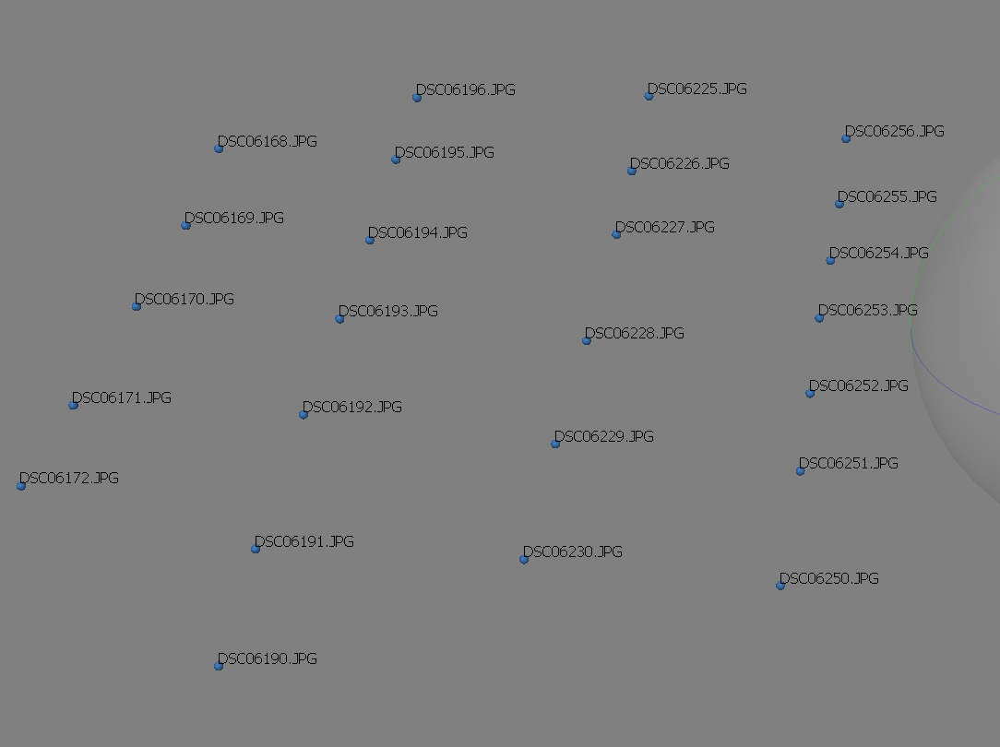
1. Aligning photos
At this stage Agisoft PhotoScan:
implements SfM algorithms to monitor the movement of features through sequence of multiple images:
- obtains the relative location of the acquisition positions,
- refines camera calibration parameters,
- sparse point cloud and a set of camera positions are formed.
Bundle Block Adjustment
- Non-linear method for refining structure and motion
- Minimizing reprojection error
- Detecting image feature points (i.e. Various geometrical similarities such as object edges or other specific details);
Bundle Block Adjustment
- Subsequently monitoring the movement of those points throughout the sequence of multiple images;
- Using this information as input, the locations of those feature points can be estimated and rendered as a sparse 3D point cloud
Aligning cameras in PhotoScan
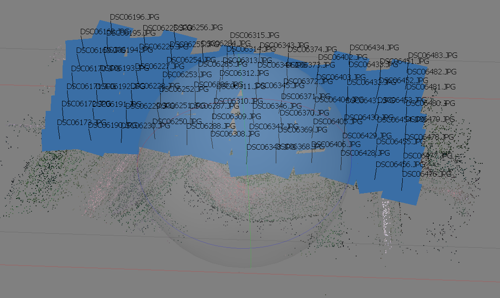
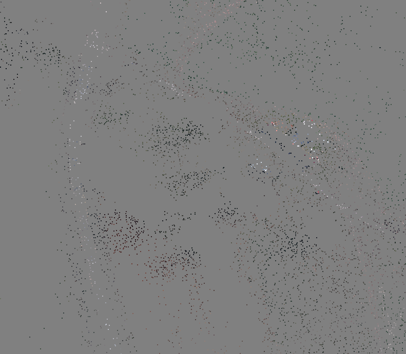
sparse point cloud generation
Accuracy
- High accuracy setting > more accurate camera position estimates (time consuming);
- Low accuracy setting > rough camera positions.
2. Building dense point cloud
At the stage of dense point cloud generation reconstruction PhotoScan calculates depth maps for every image
- Quality: Highest, High, Medium, Low, Lower> the higher quality the more accurate camera position estimates but the process is more time consuming
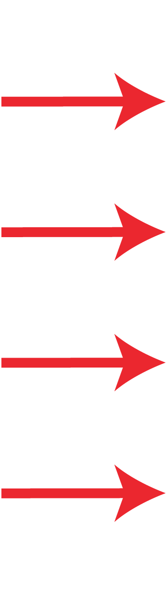
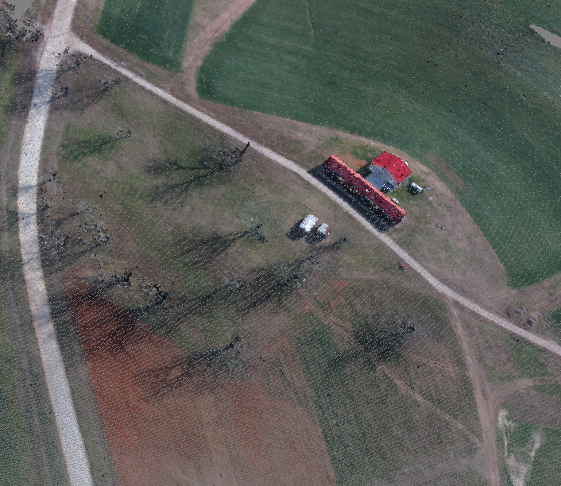
2. Building dense point cloud
Depth Filtering modes
Algorithms sorting outliers
(due to some factors, like poor texture of some elements of the scene, noisy or badly focused images)
- Mild depth filtering mode > for complex geometry (numerous small details on the foreground), for important features not to be sorted out;
- Aggressive depth filtering mode > sorting out most of the outliers;
- Moderate depth filtering mode > results in between the Mild and Aggressive
Optional: editing dense point cloud
- Manual points removal
- Automatic filtering based on applied masks;
- Sparse cloud only:
- Reducing number of points in cloud by setting tie point per photo limit
- Automatic filtering based on:
- Reprojection error;
- Reconstruction uncertainty;
- Image count.
3. Building mesh
- Arbitraty > for modeling of any kind of object
- should be selected for closed objects (statues, buildings, etc.);
- memory consumption: high
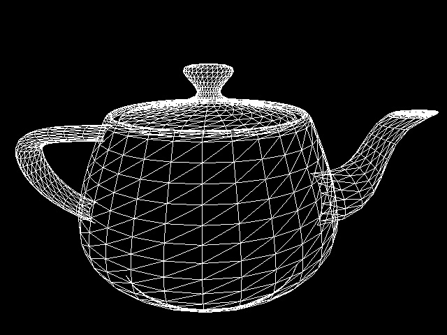
High field > for modeling of planar surfaces
- should be selected for aerial photography;
- memory consumption: low
- allows for larger data sets processing.
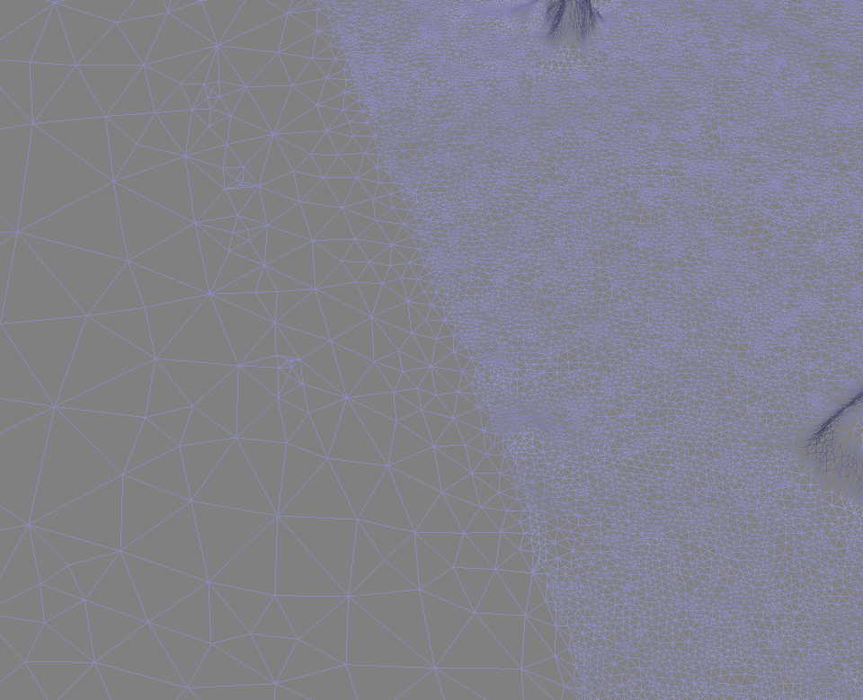
3. Building mesh
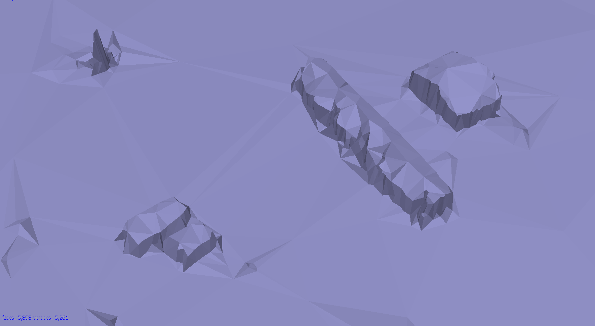
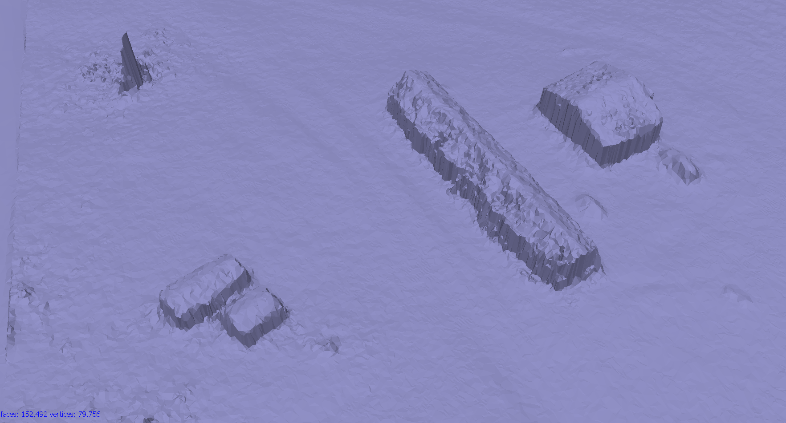
- Source data > the source for the mesh generation
- Sparse cloud > fast 3D model generation (low quailty)
- Dense cloud > high quality output based on the previously reconstructed dense point cloud.
- Face count > the maximum face count in the final mesh.
Optional: editing mesh
- Close Holes tool > repairs your model if the reconstruction procedure resulted in a mesh with several holes, due to insufficient image overlapnecessary step for volumes calculation;
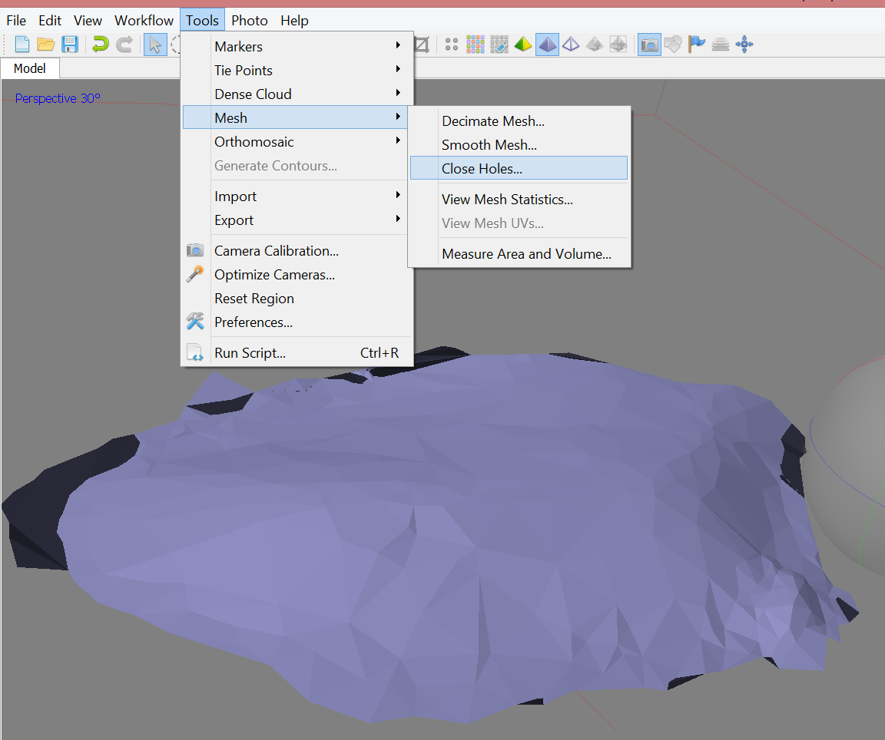
- Decimation tool > decreases the geometric resolution of the model by replacing high resolution mesh with a lower resolution one;
Optional: editing mesh
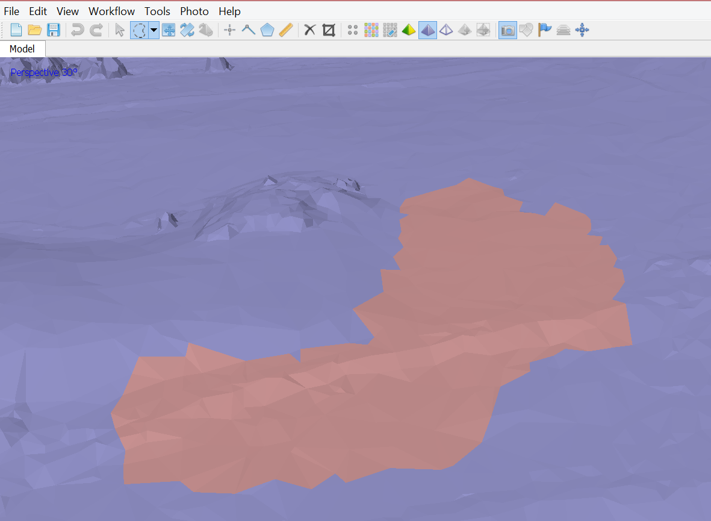
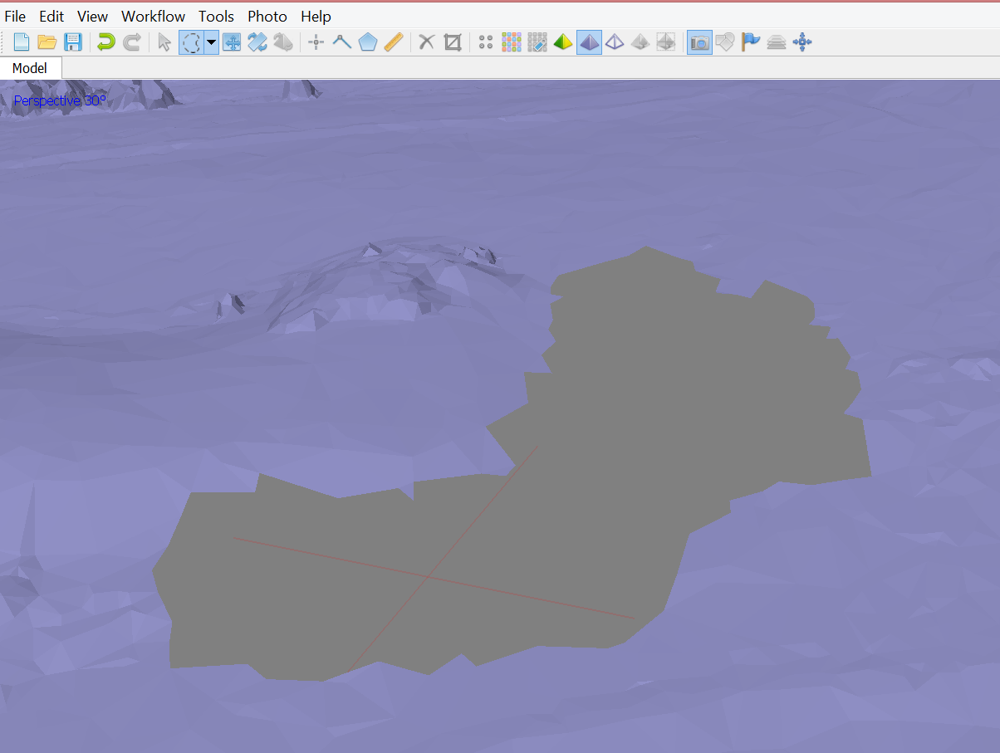
- Automatic filtering based on specified criterion:
- Connected component size,
- Polygon size.
- Manual polygon removal,
- Fixing mesh topology,
- Editing mesh in the external program
export mesh for editing in the external program > import edited mesh
4. Generating texture
- Determines how the object texture will be packed in the texture atlas;
- Effects the quality of the final model;
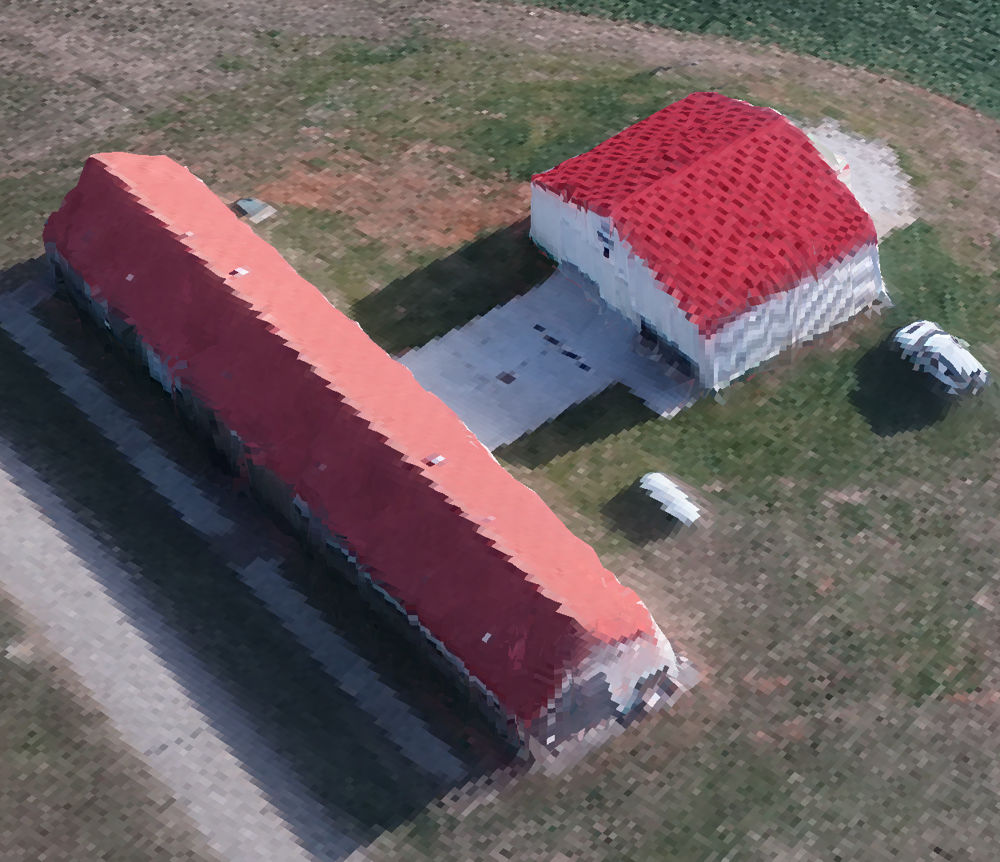
- Texture mapping modes:
- Generic,
- Adaptive orthophoto,
- Orthophoto,
- Spherical,
- Single photo,
- Keep uv.
4. Generating texture
- Determines how the object texture will be packed in the texture atlas;
- Effects the quality of the final model;
- Texture mapping modes:
- Generic,
- Adaptive orthophoto,
- Orthophoto,
- Spherical,
- Single photo,
- Keep uv.
Texture mapping modes
- Generic
- creates as uniform texture as possible.
- Adaptive orthophoto
- The object surface split into the flat part and vertical regions;
- The flat part of the surface textured using the orthographic projection,
while vertical regions textured separately to maintain accurate texture representation in such regions;
- More compact texture representation for nearly planar scenes + good texture quality
for vertical surfaces.
Texture mapping modes
- Orthophoto
- The whole object surface textured in the orthographic projection;
- Even more compact texture representation than the Adaptive orthophoto at
the expense of texture quality in vertical regions.
- Spherical - Only for objects that have a ball-like form.
- Single photo - Texture from a single photo (photo can be selected from 'Texture from' list)
- Keep uv: Generates texture atlas using current texture parametrization; Rebuilding current texture with different resolution or generating
the atlas parametrized in the external software.
Texture generation parameters
Blending mode (not used in Single photo mode)- selects the way how pixel values will
be combined to the final texture
- Average -uses the average value of all pixels from individual photos
- Mosaic gives more quality for orthophoto and texture atlas than Average mode, since it does not mix image details of overlapping photos, but uses most appropriate
- Max Intensity - selects photo which has maximum intensity of the corresponding pixel
- Min Intensity - the photo which has minimum intensity of the corresponding pixel is selected
Texture generation parameters
Texture size / count
Specifies the size (width & hight) of the texture atlas in pixels and determines the number of files for texture to be exported to:
- several files > archive greater resolution,
- single file can fail due to RAM limitations.
Enable color correction
- for processing of data sets with extreme brightness variation,
- takes up a long time.
Generating DSM
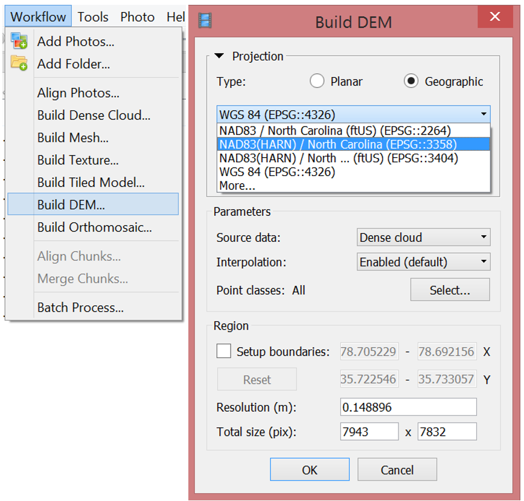
Parameters
- Source data: dense point cloud
- Interpolation
- Disabled: eads to accurate reconstruction results since only areas
corresponding to dense point cloud points are reconstructed
- Enabled (recommended): interpolation mode
PhotoScan will calculate DEM for all areas of thescene that are visible on at least one image.
Generating orthophoto
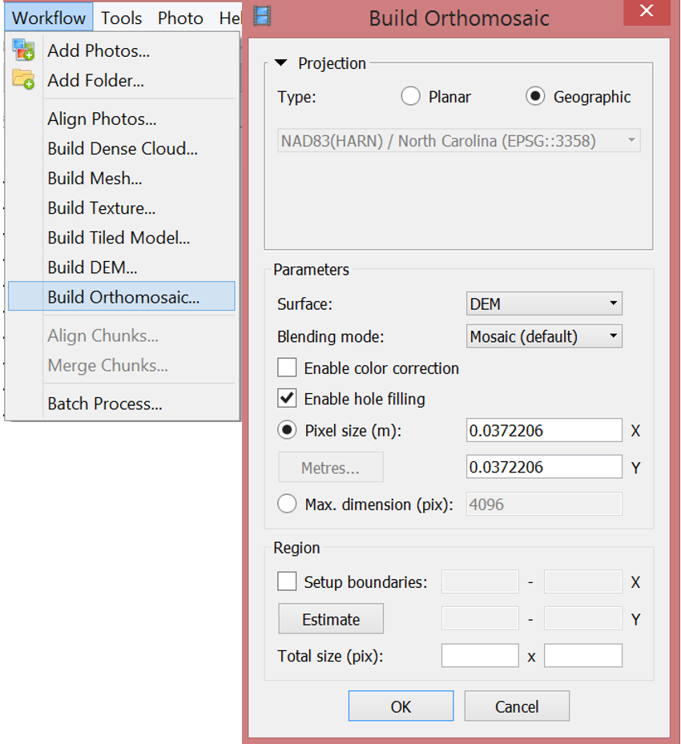
Parameters
- Surface: DEM
- Bleding mode
- Mosaic (default): implements approach with data division into several frequency domains which are blended independently.
- Average: uses the weighted average value of all pixels from individual photos.
- Disabled: the color value for the pixel is taken from the photo with the camera view being almost
along the normal to the reconstructed surface in that point.
Exporting results
and saving intermediate results
Exporting results
and saving intermediate results
- Orthophoto export
- DEM export
Exporting results
and saving intermediate results
- Orthophoto export
- DEM export
- 3D model export
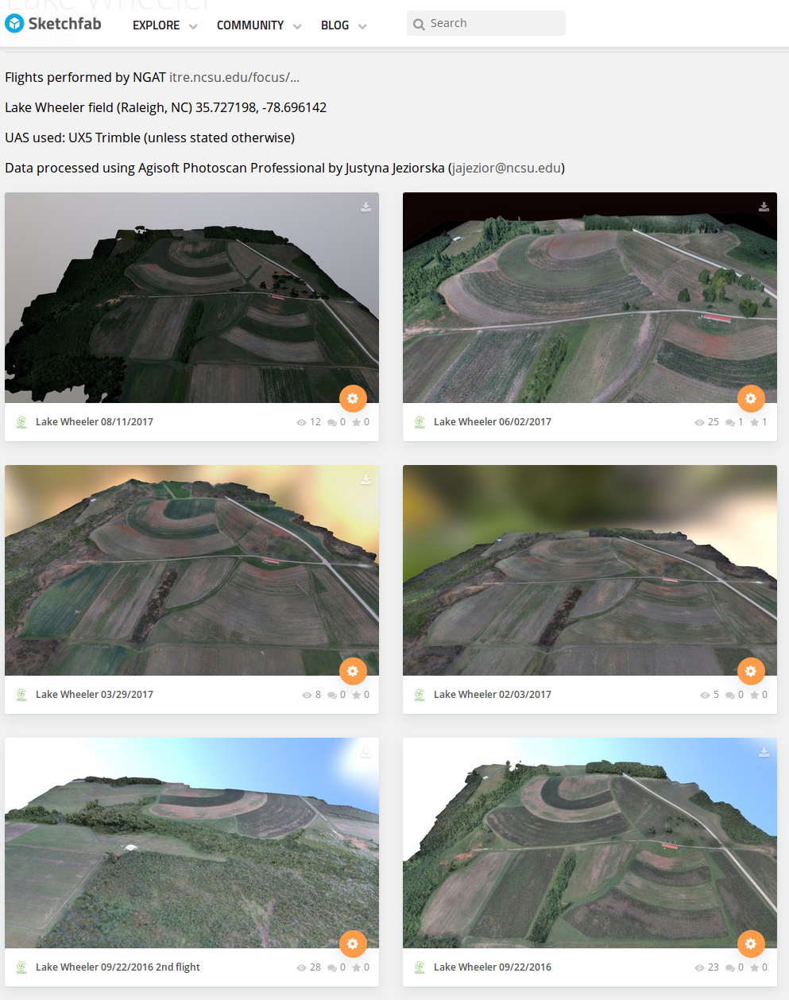
Exporting results
and saving intermediate results
- Orthophoto export
- DEM export
- 3D model export
- Point cloud export
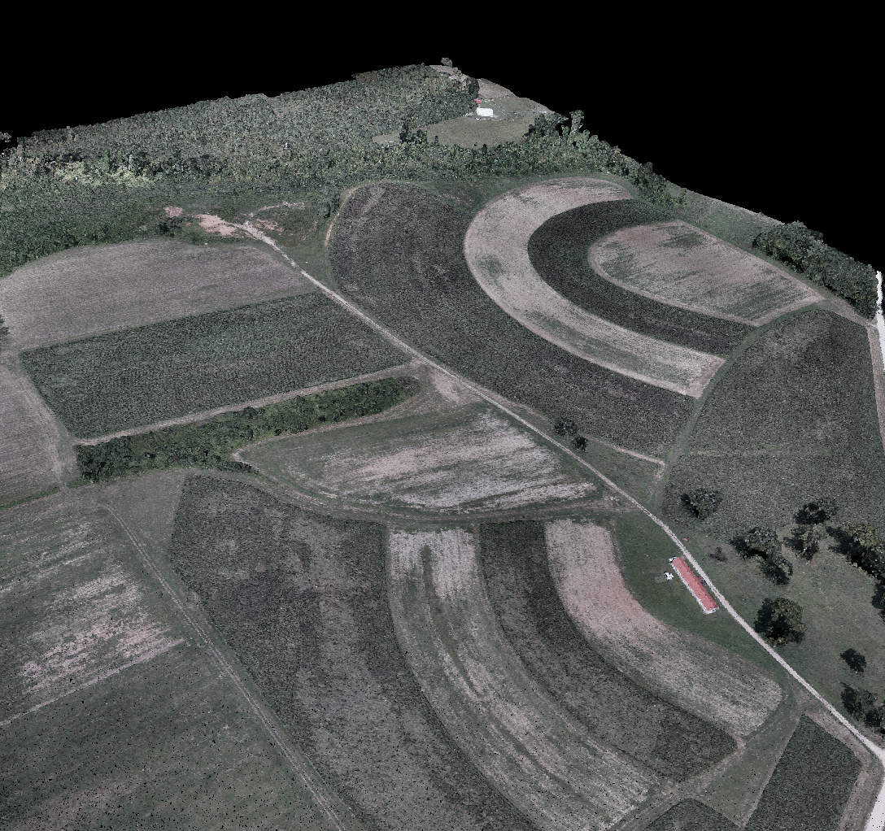
Exporting results
and saving intermediate results
- Orthophoto export
- DEM export
- 3D model export
- Point cloud export
- Processing report generation
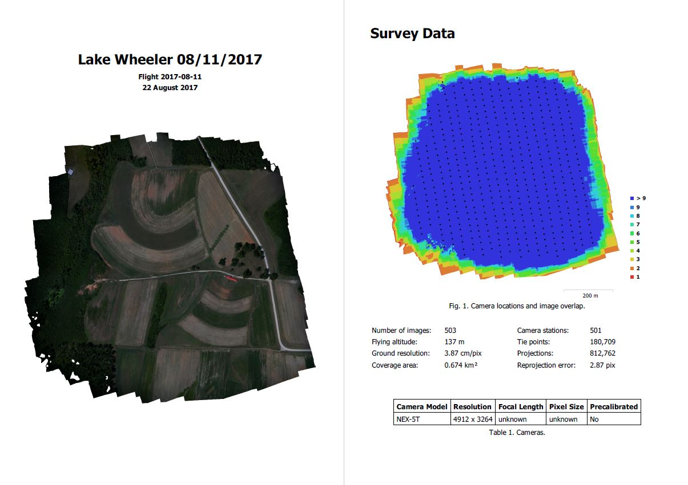
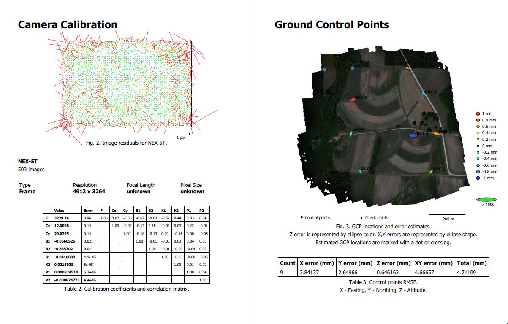
Processing report
Includes:
- Orthophoto and digital elevation model sketch;
- Camera parameters and survey scheme
- Tie points data export (matching points and panoramas)
- Image overlap statistics
- Camera positioning error estimates
- Ground control point error estimates
Quality processing with GCPs
- Marker positions are defined by their projections on the source photos;
- After optimizing alignment based on markers, Point cloud generation and other steps need to be performed
used for:
- setting up a coordinate system,
- photo alignment optimization,
- measuring distances and volumes,
- marker based chunk alignment.
- more on GCP placing and processing in Agisoft see see intro to the assignment
What did we learn?
- What is a general workflow for UAS imagery processing?
- How do we transform UAS data into orthophoto, DSM, 3D model and pointcloud?
- How to process the data in Agisoft Photoscan Professional and how to set proper parameters in the program?